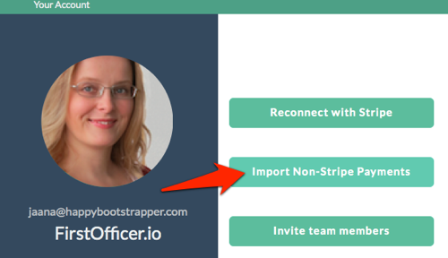

How to Import Non-Stripe Payments
At the moment you can only import payments one-by-one through the user interface.
To import payments, select 'Import Non-Stripe Payments' from your account page:

Creating and Selecting Customers
You can import new payments for your existing customers (from Stripe) or create new customers on the run.
To use existing customer info, just start typing their email in the Customer Email field. You should see a list of matching customers and can select the customer you want.
If you want to create a new customer, type their email in the Customer Email field and select the "Add…" option that appears as the first choice:
Creating and Selecting Plans
You can use existing plans from Stripe or create new ones.
If you want to import one-time payments, select "Single Purchase". The revenue will be booked to the date when payment was made, and no MRR gets booked.
To import subscription payments, select a plan that has the wanted subscription length. You can also create a new plan by typing the plan name into the Plan field. Please note that you may have to remove the existing text from the field to be able to write into it:
Payment Information
The Subscription Length will be filled out for you, unless you're creating a new plan - in that case you need to fill it in. The MRR will be calculated based on the subscription length.
Note! If you need a custom length that does not match your existing plans, it is recommended that you create a new plan rather than add the payments to a plan with different period.
Amount is the total amount that customer paid, before any discounts. So if they paid $120 for an annual subscription, you'd set 12 as the Subscription Length and $120 as the Amount.
Discount field can be used to book discounts. It's up to you if you add the discount to this field, or if you reduce it yourself from the Amount. Any discounts added here will also show properly in Revenue View.
Seats or Capacity-based Charging
Just like with Stripe invoices, you can use the Quantity field to set the number of seats this customer purchased. If you sell standard subscriptions, just leave the value to 1.
Continuing Subscriptions that Started in Stripe
You may want to import payments for customers who already have an active subscription in Stripe.
So if you want to make sure that customer's subscription continues uninterrupted, you can use Subscription ID to tell FirstOfficer that the payment belongs to an existing subscription.
You can find the subscription ID's from Stripe, they're the strings starting with 'sub_'.
If you leave the Subscription ID empty, FirstOfficer will generate a new unique id and the imported payment is considered as a new/upgrade subscription.
The Import
The imported payments will go into the section Payments Waiting for Import and they will be imported during the next data update.
The imported payments that are already visible in your metrics are shown in section Imported Payments.
Whatever you import will be shown as it was coming from Stripe. All upgrades, downgrades and quantity changes will be booked just like with any other payments.
Happy importing!
If you run into any problems, please contact support